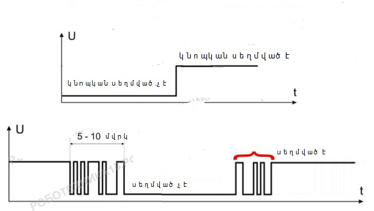

Ինչպես միացնել սեղմակը Arduino-ին
Սեղմակները Arduino-ին միացնելու ժամանակ առաջացած գլխավոր խնդիրը «շփման զնգոցն» է։ Էությունը կայանում է նրանում, որ մեխանիկական կոնտակտները տակատային սեղմակները երբեք չեն փակվում և փակվում են միայն ակնթարթ։ Միլիվարկյանների ընթացքում տեղի է ունենում կոնտակտների կարճ միացում։
Arduino տպասալի վրա այդ խնդրից խուսափելու համար կիրառվում են տարբեր էլեկտրական սխեմաներ կոնդեսատորներով։ Սակայն ավելի հեշտ է խնդրին ծրագրային լուծում տալ, դրա համար կիրառվում է սպասումը մի քանի միլիվարկյան, դրա համար կիրառվում է Bounce2.h գրադարանը։
Անհրաժեշտ էլեմենտներ
- Arduino Uno/ Arduino Nano/ Arduino Mega2560
- breadbouard
- 1 լեդ
- ռեզիստոր 220օմ և 10կմմ
- տակտային սեղմակ
- լարեր «պապա-պապա»«պապա-մամա»
void setup() {
pinMode(13,OUTPUT); //հայտարարում ենք պին 13 ելք
pinMode(2,INPUT ); // հայտարարում ենք պին 2 մուտք
}
void loop () {
if (digitalRead(2) == HIGH) // եթե պին 2 5վոլտ հոսանք է
{
digitalWrite(13,HIGH ); // լեդը միանում է
}
if (digitalRead(2) == LOW) // եթե պին 2-ում հոսանք չկա
{
digitalWrite(13,LOW ); // լեդը անջատվում է
}
}
Կոդի մեկնաբանություն
Կիրառելով տպասալի թվային մուտքերը և digitalRead հրամանը՝ տվյալները հաշվելու համար։ Ուշադրություն դարձրեք, որ սեղմակի չսեղմված վիճակում Pin2-ի տրամաբանական արժեքը«0»է։ Սեղմակի օգնությամբ միացնենք և անջատենք ներկառուցված լեդը, որը միացված է թվային 13-րդ թվին
Հնարավոր է նաև անալոգային մուտքին։ միակ տարբերությունն այն է, որ միացվում է միկրոկոնտրոլերի անալոգային պինին։